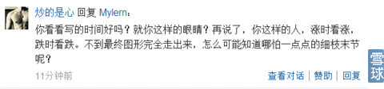
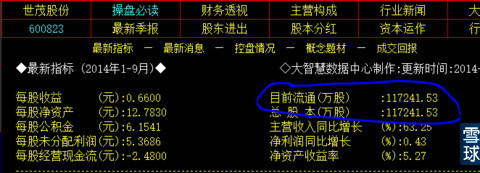
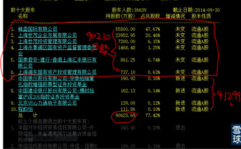
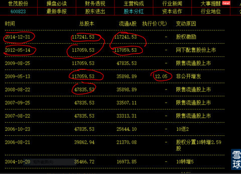
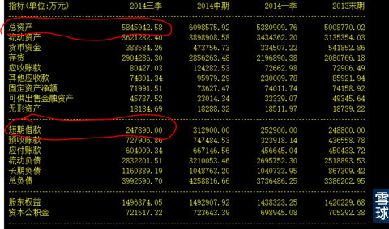
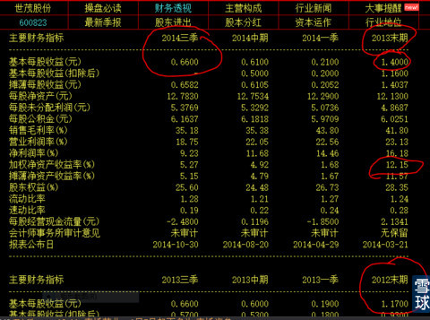
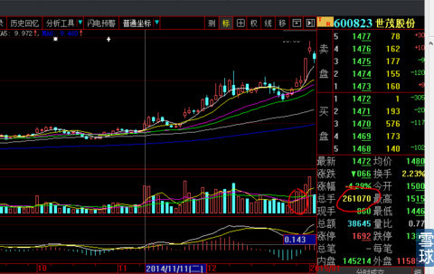

看到一个特别不道德的段子：长丑不是你的错，跑出来吓人就是你的不对了。
我也觉得这个段子没有起码道德底线。唯一的好处就是直白，言简意赅，即使傻子也能听懂段子的比喻。这也是语言修辞的魅力吧。
看到刚刚一个含有直白鄙夷口气的问话。截图如下
我的回复是：

好了，我们就事说事：
下图是世茂股份F10首页，总股本11.72亿股

下图是2014年9月30日前十股东结构图，前6大股东是不会卖出的，合计90210万股。
总股本11.72亿股—前六大不售股9.02=2.7亿股。这就是最大可能流通盘。
下图是股本的解禁状况图：我们可以看到公开的信息：2009年5月对大股东定向增发，总股本由47835.53万股，扩张到117059.53万股。2012年5月14日已经全面解禁。现在你故意说“限售解禁股价还上得去？”是何用心？你认为会扩大2.7亿股真实流通盘吗？

下图是资金状况表图：总资产584.59亿元，银行借款只有区区24.79亿元。你去找找还有哪家商业房地产企业，有这么好的资金状况？贷款负债率只有4.24%，这可是大型商业房地产企业呀？还是开发大上海的大企业。

下图是业绩经营情况表：连续多年每股收益平均都在1.2元以上。2014年每股净资产在13.5元之上。今天股价收盘14,72元。我写帖子的时候，它的股价是在12.5元。
你来上海买房子，要人家在成本价而不是销售价的基础上再打85%折扣，看看人家会不会打你？

以上可以看出，分析一只股票需要下多么大的功夫？
下图可以看出，2914年12月29日、30日连续两天成交量3080万股，股价没有太大变化，12月31日股价涨停成交量4081万股，仅仅比上一日多1000万股，换句话说，就是这1千万股就把股价打上涨停板，懂吗？股价最终会涨到多少还需要再反复反复的穷问吗？股价都已经打开一片新天地了，不知道趁回踩赶紧加仓，你还在那里傻乎乎的想来想去解禁股抛不抛售？
不过，量你的智商也听不懂我在说什么。

昨日和今天股价停滞两天，你看到涨就热血沸腾，看到跌就一脑袋的浆糊。一想到你这样的蠢货会从我的帖子获益，老子就来气。要不是因为有铁粉在里面，哪有心情跟你说闲话？你要说不是脑子有问题，我就认为你是庄家专门派来放水的。
脑子聪明也好笨蛋也罢，是不以人的意志为转移的，但是太笨还敢思考就是你的不对了。
 |
600823世茂股份如何估值？炒的是心 2015-01-06 20:06:37 |
Copyright © 1996-2014 SINA Corporation All Rights Reserved.